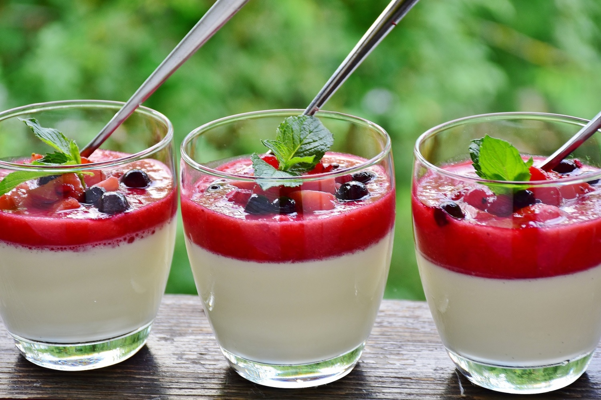

Back to Recipes
Panna Cotta

Panna Cotta is a desert originating from Italy reminescent of puding. It's a very simple and quick desert to prepare at home.
Ingredients
- Whipping cream (12%), 300 ml
- Gelatine sheets, 2
- Sugar 100g
- Vannila extract, 1 teaspoon
- Jam and fruits for decoration and finish
Recipe
- Add the cream into a pot and heat it up.
- Prepare a bowl with tap water and insert the sheets of gelatine.
- Once the cream starts boiling immedietly lower the heat and insert the soaked sheets of gelatine.
- Let the gelatine dissolve in the cream and add sugar and any flavouring you like (vannila extract).
- Once the gelatine is fully disolved pour it into cups or other containers in which it will be served.
- Let it sit over night in the fridge. Once the desert is fully solid add jam and decorate with fruits.